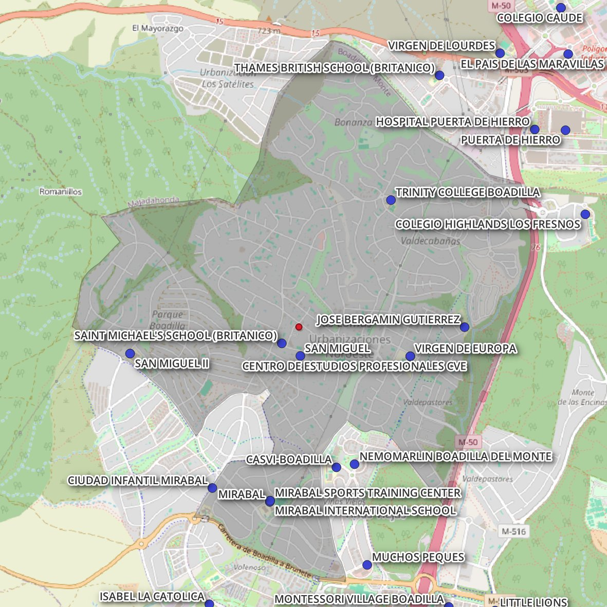

Puntos de interés en el territorio parroquial
Parroquia Santos Apóstoles (Boadilla del Monte) · Arciprestazgo de Villaviciosa de Odón
Entidades religiosas no católicas
No hay ninguna entidad religiosa no católica en el territorio de esta parroquia.
Centros educativos

11 centros educativos en el territorio de la parroquia (privado: 10, público: 1).
| Centro | Tipo | Titularidad | Domicilio | Web |
|---|---|---|---|---|
| CENTRO DE ESTUDIOS PROFESIONALES CVE | Centro privado de formación profesional específica | Privado | Calle del Valle de Santa Ana, 1, 28660 Boadilla del Monte | Página web |
| CIUDAD INFANTIL MIRABAL | Centro privado de educación infantil | Privado | Calle del Monte Romanillos, s/n, 28669 Boadilla del Monte | Página web |
| JOSE BERGAMIN GUTIERREZ | Colegio de educación infantil y primaria | Público | Calle Islas Cíes, 6, 28660 Boadilla del Monte | Página web |
| MIRABAL | Centro autorizado elemental de música | Privado | Calle del Monte Almenara, s/n, 28660 Boadilla del Monte | Página web |
| MIRABAL INTERNATIONAL SCHOOL | Centro privado de educación primaria y secundaria | Privado | Calle del Monte Almenara, s/n, 28660 Boadilla del Monte | Página web |
| SAINT MICHAEL'S SCHOOL (BRITANICO) | Centro docente extranjero en España | Privado | Calle del Valle de Bielsa, 4, 28669 Boadilla del Monte | |
| SAN MIGUEL | Centro privado de educación primaria | Privado | Calle del Valle de Bielsa, 1, 28669 Boadilla del Monte | |
| SAN MIGUEL II | Centro privado de educación primaria y secundaria | Privado | Calle Río Guadiana, 2, 28669 Boadilla del Monte | |
| ST. MICHAEL'S SCHOOL II (BRITANICO) | Centro docente extranjero en España | Privado | Calle Río Guadiana, 2, 28669 Boadilla del Monte | |
| TRINITY COLLEGE BOADILLA | Centro privado de educación infantil, primaria y secundaria | Privado | Calle Playa de Formentor, s/n, 28660 Boadilla del Monte | Página web |
| VIRGEN DE EUROPA | Centro privado de educación infantil, primaria y secundaria | Privado | Calle del Valle de Santa Ana, 1, 28669 Boadilla del Monte | Página web |
Fuente: registro de centros educativos de la Comunidad de Madrid. Solo se recogen los centros de alta.